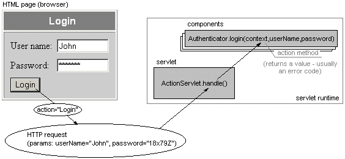

|
|||||||
| PREV CLASS NEXT CLASS | FRAMES NO FRAMES | ||||||
| SUMMARY: INNER | FIELD | CONSTR | METHOD | DETAIL: FIELD | CONSTR | METHOD | ||||||
java.lang.Object
|
+--javax.servlet.GenericServlet
|
+--javax.servlet.http.HttpServlet
|
+--org.webmacro.servlet.WMServlet
|
+--org.webmacro.as.ActionServlet
Highly configurable servlet that enables mapping of HTTP requests to methods of components.

Each component is referenced by the configuration file, where it has specified Java class and persistence.
Persistence determines durability of a component object and may be of three types:
The component class must have a public constructor with a single parameter of type
org.webmacro.as.ActionServlet, which is used to create the component. If
the component wants to be informed when it is no longer used by ActionServlet,
it must implement Destroyed interface.
All HTTP requests must have defined a value of HTTP parameter named 'action' and, optionally, 'form' (if omitted, it has a default empty value: ""). After combination of these two parameters values is chosen a component which action method is invoked. For example, "login" action would invoke someComponent.login(...) method.
Minimum requirements for each action method are:
Optionally, action methods may have additional parameters, to which are passed values of appropriate HTTP parameters. Values of HTTP parameters are converted automatically to Java types by type handlers}.
Example: the following HTML form defines a parameter named userName and password (and of course, the mandatory 'action'):
<FORM METHOD="POST">
User name: <INPUT TYPE="Text" NAME="userName">
Password: <INPUT TYPE="Password" NAME="password">
<INPUT TYPE="Submit" NAME="action" VALUE="Login">
</FORM>
Values of these parameters can be easily passed to an action method:
public Template login(WebContext context, String userName, String password)Note: A similar effect can be achieved by GET method - using a link like:
TypeHandler, SimpleTypeHandler and
CompositeTypeHandler for more information.
<?xml version="1.0"?>
<!DOCTYPE application SYSTEM
"http://dione.zcu.cz/~toman40/ActionServlet/dtd/ActionServlet_0_5.dtd">
<application>
<templates>
...
</templates>
<type-handlers>
...
</type-handlers>
<components>
...
</components>
</application>
1.5.1 The root <application> elementmay have optional repository attribute, which specifies a directory where servlet components and other classes are stored [TODO: future versions may accept also .jar repositories]. This attribute can be used only if you don't subclass ActionServlet, otherwise all classes are expected to be loaded from CLASSPATH by the servlet runtime, as usually. Subelements of <application> follow.
Example:
<application repository="c:/servlets/App1/classes">
...
</application>
1.5.2 <templates> elementcontains one or more <template> subelements used to specify:
newSession() method is
expected to do the job).
Each <template> element must have a name attribute specifying the name of the template.
Example 1:
<templates>
<template name="Login.wm" is-new-session="true"/>
</templates>
Example 2:
<templates>
<template name="Login.wm"/>
<template name="Main.wm" is-new-session="true">
<output-variable name="isAuth" component="Authenticator" value="isAuthenticated()"/>
<output-variable name="user" component="Authenticator" value="getUser()"/>
</template>
</templates>
1.5.3 <type-handlers> elementcontains one or more <type-handler> subelements, that bind type handlers to appropriate Java types.
Example:
<type-handlers>
<type-handler type="my.types.Email" class="my.handlers.EmailHandler"/>
<type-handler type="java.util.Date" class="my.handlers.DateHandler"/>
</type-handlers>
1.5.4 <components> elementcontains one or more <component> elements (with attributes class and persistence), which may contain one or more <action> subelements.
Example:
<components>
<component class="Authenticator" persistence="application">
<action name="Login" method="login(String userName, String password)"/>
</component>
<component class="SearchEngine" persistence="application">
<action name="Search" method="search(String str)"/>
<action form="Status" name="OK" method="getStatus()"/>
</component>
</components>
1.5.4.1 One or more <action> elements,which bind actions to components' action methods, can be specified inside each <component> element. Element <action> has attributes:
Example:
<component ...>
<action form="Search" name="OK" method="search(String str)"/>
<action form="Submit" name="OK" method="newURL(java.net.URL url)"/>
</component>
Element <action> can optionally contain one or more
<output-variable> subelements, which put additional
variables to WebContext of the action.Example:
<action name="Login" method="login(String userName, String password)">
<output-variable name="user" component="Authenticator" value="getUser()"/>
</action>
1.5.5 One or more <output-variable> elementscan be specified inside <template> and/or <component> elements. It has three attributes:
Note 1: Output variables are evaluated in the specified order.
Note 2: First are set output variables of <action> and at last of
<template>.
Example: set $user to Authenticator.getUser() and $name to $user.getName()
<output-variable name="user" component="Authenticator" value="getUser()"/> <output-variable name="name" value="$user.Name"/>1.5.6 All-in-one example
An example of XML configuration file may look like this:
<?xml version="1.0"?>
<!DOCTYPE application SYSTEM
"http://dione.zcu.cz/~toman40/ActionServlet/dtd/ActionServlet_0_5.dtd"">
<application repository="C:/servlets/shop/classes">
<templates>
<template name="Login.wm"/>
<template name="Main.wm" is-new-session="true">
<output-variable name="isAuth" component="Authenticator" value="isAuthenticated()"/>
<output-variable name="user" component="Authenticator" value="getUser()"/>
</template>
</templates>
<type-handlers>
<type-handler name="shop.types.Email"
class="shop.handlers.EmailHandler"/>
</type-handlers>
<components>
<component class="shop.Main" persistence="application">
<action name="showMain" method="showMain()"/>
<action name="showGoods" method="showGoods()">
<output-variable name="goods" value="getGoods()"/>
</action>
</component>
<component class="shop.Toolbar" persistence="session"/>
</components>
</application>
Note: A XML configuration filename must be passed to ActionServlet via a servlet init
parameter named "ActionConfig" (consult your servlet runtime
documentation how to do it).
HTTP request processing
handle() method.
ActionServlet requires that 'action' (and optional 'form') HTTP parameters
are defined in the request.
beforeConversion() method of
ActionServlet is called.
beforeInvoke() method is called.
afterInvoke() method is called.
Exceptions to this schema happen if:
conversionError()
method is called,
unassignedAction() is called.
ActionServlet informs components when they are no longer used - see Destroyed interface.
ActionServlet usage
Note: Because ActionServlet is no longer abstract class, subclassing is not necessary unless you need to modify some of its functionality.
TypeHandler, Serialized Form| Field Summary | |
protected int |
sessionReaperTimeout
Sleeping period of session data reaper in miliseconds (default: 1 minute) |
| Constructor Summary | |
ActionServlet()
|
|
| Method Summary | |
protected org.webmacro.Template |
afterInvoke(org.webmacro.Template template,
org.webmacro.servlet.WebContext context,
java.lang.String form,
java.lang.String action,
java.lang.Object[] convertedParams)
Method called right after each action method invocation. |
protected void |
beforeConversion(org.webmacro.servlet.WebContext context,
java.lang.String form,
java.lang.String action)
Method called before any parameter type handler is invoked. |
protected org.webmacro.Template |
beforeInvoke(org.webmacro.servlet.WebContext context,
java.lang.String form,
java.lang.String action,
java.lang.Object[] convertedParams)
Method called right before each action method. |
protected org.webmacro.Template |
conversionError(org.webmacro.servlet.WebContext context,
java.lang.String form,
java.lang.String action,
ConversionException e)
Method called on parameter conversion error or when a HTTP parameter is missing or has a wrong name. |
java.lang.Object |
getComponent(java.lang.Class componentClass,
boolean create)
Returns component of a given class. |
org.webmacro.Template |
getWMTemplate(java.lang.String key)
Retrieves a template from the template provider - this method replaces getTemplate() method. |
org.webmacro.Template |
handle(org.webmacro.servlet.WebContext context)
Handles HTTP request. |
protected org.webmacro.Template |
newSession(org.webmacro.servlet.WebContext context)
Method called upon a new session. |
void |
start()
Initialization of ActionServlet. |
protected void |
stop()
Called when the servlet is destroyed. |
protected org.webmacro.Template |
unassignedAction(org.webmacro.servlet.WebContext context,
java.lang.String form,
java.lang.String action)
Method called if 'action' parameter is defined but not assigned to any method. |
| Methods inherited from class org.webmacro.servlet.WMServlet |
destroy, destroyContext, doGet, doPost, error, execute, getBroker, getConfig, getConfig, getContext, getFastWriter, getLog, getLog, getTemplate, getURL, getWebContext, init, init, initWebContext, initWebMacro, isDestroyed, newContext, writeTemplate, writeTemplate |
| Methods inherited from class javax.servlet.http.HttpServlet |
doDelete, doOptions, doPut, doTrace, getLastModified, service, service |
| Methods inherited from class javax.servlet.GenericServlet |
getInitParameter, getInitParameterNames, getServletConfig, getServletContext, getServletInfo, log |
| Methods inherited from class java.lang.Object |
clone, equals, finalize, getClass, hashCode, notify, notifyAll, toString, wait, wait, wait |
| Field Detail |
protected int sessionReaperTimeout
| Constructor Detail |
public ActionServlet()
| Method Detail |
protected org.webmacro.Template afterInvoke(org.webmacro.Template template,
org.webmacro.servlet.WebContext context,
java.lang.String form,
java.lang.String action,
java.lang.Object[] convertedParams)
throws ActionException
context - context from handle() methodtemplate - template returned be action methodform - form that 'action' belongs to (null if not specified)action - invoked action nameconvertedParams - converted parameteters, which have been passed to the
action method. Note: 'convertedParams[0]' is context
from handle() (is of type WebContext).
protected void beforeConversion(org.webmacro.servlet.WebContext context,
java.lang.String form,
java.lang.String action)
context - context from handle() methodform - form that 'action' belongs to (null if not specified)action - action to be invoked
protected org.webmacro.Template beforeInvoke(org.webmacro.servlet.WebContext context,
java.lang.String form,
java.lang.String action,
java.lang.Object[] convertedParams)
throws ActionException
context - context from handle() methodform - form that 'action' belongs to (null if not specified)action - action to be invokedconvertedParams - converted parameteters, which will be passed to the
action method. Note: 'convertedParams[0]' is context
from handle() (is of type WebContext).
protected org.webmacro.Template conversionError(org.webmacro.servlet.WebContext context,
java.lang.String form,
java.lang.String action,
ConversionException e)
throws ActionException
context - context from handle() methodform - form that 'action' belongs to (null if not specified)action - action which cannot be called due to the errore - exception which caused the error
public final java.lang.Object getComponent(java.lang.Class componentClass,
boolean create)
componentClass - corresponds to the component class attribute from
the configuration filecreate - true = the component will be created if doesn't yet existjava.lang.IllegalStateException - if the method is called from a non-session thread
(only for components with "session" persistence)public org.webmacro.Template getWMTemplate(java.lang.String key)
getTemplate() method.
public final org.webmacro.Template handle(org.webmacro.servlet.WebContext context)
throws org.webmacro.servlet.HandlerException
conversionError()
is called.
unassignedAction() is called.
handle in class org.webmacro.servlet.WMServletActionException - on error of action methodorg.webmacro.servlet.HandlerException - on other errorTypeHandlerprotected org.webmacro.Template newSession(org.webmacro.servlet.WebContext context)
public void start()
start in class org.webmacro.servlet.WMServletprotected void stop()
stop in class org.webmacro.servlet.WMServlet
protected org.webmacro.Template unassignedAction(org.webmacro.servlet.WebContext context,
java.lang.String form,
java.lang.String action)
throws ActionException
context - context from handle() methodform - form that 'action' belongs to (null if not specified)action - unassigned action nameActionException - on error of action method
|
|||||||
| PREV CLASS NEXT CLASS | FRAMES NO FRAMES | ||||||
| SUMMARY: INNER | FIELD | CONSTR | METHOD | DETAIL: FIELD | CONSTR | METHOD | ||||||